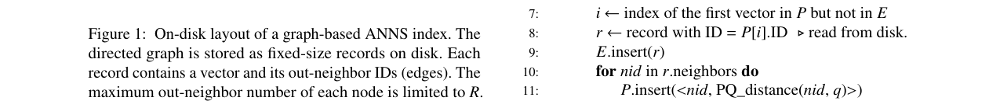
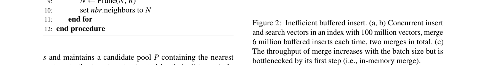
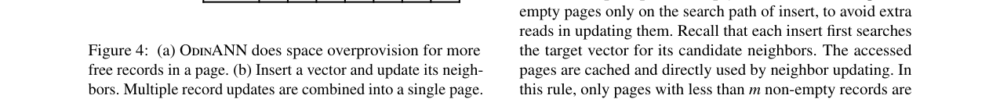
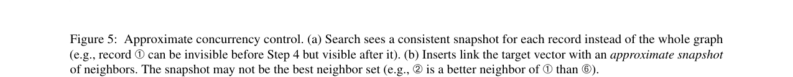
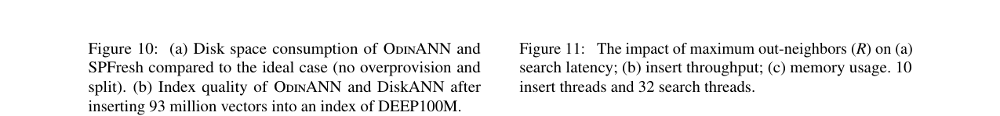
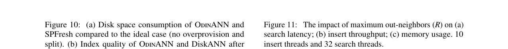
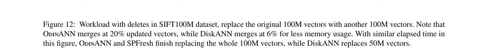

OdinANN: Direct Insert for Consistently Stable Performance in Billion-Scale Graph-Based Vector Search
总结
近似最近邻搜索（ANNS）是网页搜索和检索增强生成（RAG）等场景的核心技术。对于十亿规模的 ANNS，磁盘图索引因其性能和成本效益而备受青睐，但现有索引在插入新向量时无法维持稳定的搜索性能。
As-is: 现有的磁盘图索引（如 DiskANN）采用缓冲插入（buffered insert）策略：先将新向量吸收到内存索引中，再周期性地批量合并到磁盘索引。该方案存在三大痛点：(1) 合并过程与前端搜索产生严重的磁盘带宽干扰，导致搜索中位延迟增至 1.54 倍；(2) 合并时内存消耗巨大，例如将 3% 的向量合并到十亿规模索引需要 125GB 内存；(3) 合并吞吐量受限于逐向量搜索邻居的过程，即使增大批量也无法突破 3000 QPS 的瓶颈，且合并时间占总时间超过 30%。
To-be: OdinANN 提出直接插入（direct insert）策略，将向量逐个直接写入磁盘索引，而非缓冲后批量合并。通过两项核心技术——无垃圾回收的更新合并（GC-free update combining）和近似并发控制（approximate concurrency control）——实现了稳定的前端搜索性能。在十亿规模数据集上，OdinANN 的搜索中位延迟波动仅为 1.07 倍（对比 DiskANN 的 2.44 倍），同时达到 5000 QPS 搜索吞吐和 1100 QPS 插入吞吐，峰值内存比 DiskANN 降低约 128GB，搜索延迟相比 SPFresh 降低 62.1% 且精度高出约 15%。
---
背景
近似最近邻搜索（ANNS）是多模态数据检索的关键技术，广泛应用于网页搜索和检索增强生成（RAG）等场景。多模态数据（如文本和图像）通过神经网络编码为高维向量，ANNS 索引基于这些向量构建，在搜索时遍历索引以获取查询向量的 k 个最近邻。
在所有 ANNS 索引类型中，磁盘图索引（on-disk graph-based indexes）因其性能和成本效益而受到青睐，能够支持大规模向量搜索（如十亿级向量）。如图 1 所示，图索引将有向图以邻接表形式存储在磁盘上，每个磁盘页包含若干定长记录（record），每条记录由一个向量（节点）和其出邻居 ID 列表（边）组成。为保证记录定长，节点的最大出度被全局限制为 R（可配置参数）。

当前系统持续产生新数据，因此 ANNS 索引需要支持向量更新。更新可通过两种方式处理：索引重建和索引更新。索引重建在十亿规模数据集上需要数天，无法保持搜索结果实时性，因此索引更新成为近期磁盘图索引的首选方案。DiskANN 是目前唯一支持更新的磁盘图索引，它通过缓冲插入和删除来处理更新：将更新吸收到内存索引中，然后周期性地将内存索引批量合并到磁盘索引。
然而，通过实验分析，作者发现缓冲插入在合并到磁盘时效率低下。如图 2 所示，在 100M 向量的 BIGANN 数据集上，每次合并 6M 向量时，出现了三个问题：

1. 搜索性能波动：合并期间搜索中位延迟平均增至 1.54 倍，因为合并需要搜索磁盘索引以找到目标向量的邻居，与前端搜索产生严重的读带宽干扰。
2. 高内存消耗：合并 6% 向量时峰值内存超过 32GB（超过磁盘索引大小的 50%），包括内存索引和合并期间缓冲的磁盘写入。十亿规模下合并 3% 向量需要 125GB 内存。
3. 合并时间长：合并占总时间超过 30%，且即使增大批量也收效甚微——合并吞吐量受限于逐向量搜索邻居的"内存合并"步骤，该步骤无法高效批处理，吞吐量上限仅 3000 QPS。
---
问题
本文聚焦的核心问题是：如何在十亿规模磁盘图索引中，在持续插入新向量的同时维持稳定的前端搜索性能？
具体而言，现有缓冲插入方案的根本矛盾在于：批量合并虽然减少了磁盘写入次数，但其合并过程本身会产生突发的磁盘 I/O 干扰，导致搜索性能周期性波动。同时，缓冲机制引入了额外的内存索引和合并缓冲区，内存消耗随批量大小线性增长。更关键的是，合并的第一步（内存合并）必须逐向量搜索磁盘索引以确定邻居关系，这一过程本质上是串行的，无法通过增大批量来提升吞吐。
作者提出直接插入的思路：将向量逐个直接插入磁盘索引，而非缓冲后批量合并。直接插入可以自然解决上述三个问题：(1) 将插入开销均匀分摊到整个时间线，避免突发干扰；(2) 消除内存索引和合并缓冲区，节省内存；(3) 由于缓冲插入本身无法从批处理中获益，直接插入有望达到同等效率。
但实现高效的直接插入面临两大挑战：
挑战 1：直接插入的磁盘写入开销高。 每次插入需要更新目标向量及其数十到数百个邻居的记录。原地更新会导致大量随机 SSD 写入；而使用日志结构布局则面临频繁垃圾回收（GC）——插入 10% 新记录会使索引膨胀 12.8 倍（假设出度为 128），仅 7.9% 的记录有效。
挑战 2：与搜索的并发控制复杂。 插入可能更新搜索路径上的所有记录，简单锁定所有相关记录会导致近根节点的严重锁竞争。虽然可以利用近似索引特性放松隔离级别来提升并发，但如何在磁盘图索引上高效实现这一思路仍缺乏探索。
---
解决方案
OdinANN 是一个支持直接插入和缓冲删除的十亿规模磁盘图索引。其整体架构如图 3 所示，包含三个核心组件：无 GC 更新合并（§3.2）、近似并发控制（§3.3）、缓冲删除与合并（§3.4）。
无垃圾回收的更新合并（GC-Free Update Combining）
核心观察是：图索引的定长记录特性使得异位（out-of-place）记录更新可以无需垃圾回收——如果一条记录被异位更新，其原始位置可以直接被另一条更新复用，无需显式 GC。
基于此，OdinANN 进行空间过度配置（space overprovision）：在每个磁盘页中预留多个空闲记录槽。插入时，不修改记录的原始位置，而是将更新后的记录写入同页的空闲槽中，从而将多条异位更新合并为一次页写入。原始记录位置标记为可复用。

如图 4 所示，9 条已分配记录正常需要两页，但 OdinANN 分配三页，在 page 0 中留出三个空闲槽。插入 V9（邻居为 V5、V6）时，V9、V5、V6 三条记录的更新被合并到 page 0 的单次写入中。
记录分配规则（按优先级排列）：
- 规则 1（空页规则）：优先在所有记录均无效的空页中分配，无需额外读取。内存中维护空页队列。
- 规则 2（路径上部分空页规则）：仅在插入搜索路径上的部分空页中分配（非空记录数 < m 的页），利用已缓存的页面避免读-改-写操作。
- 规则 3（过度配置规则）：若上述规则无法满足，则分配新页。
空间与写放大分析：每页平均含 m 条非空记录，空间消耗为 (n/m)×（n 为每页记录数）；相比日志结构布局合并 n 条更新，OdinANN 合并 (n-m) 条，写放大为 n/(n-m)×。默认 m = ⌊n/2⌋，空间消耗和写放大均为 2×。作者指出这种过度配置具有成本效益：十亿规模下 OdinANN 使用 2× 磁盘空间（约 1TB 额外）但减少约 128GB 峰值内存，而 1TB SSD（约 $100）比 128GB DRAM（>$200）便宜。
近似并发控制（Approximate Concurrency Control）
搜索和插入都是近似过程——搜索返回近似 top-k，插入使用 top-k 搜索选择近似邻居集。这些操作不要求严格的原子性和隔离性，可以放松以获得更好的并发性。

搜索-插入冲突：搜索线程仅在读取记录时（Algorithm 1 第 8 行）持有 ID-to-location 映射项的锁，以确保获得一致的记录快照（避免撕裂读）。由于采用异位更新，仅锁映射项即可，无需锁页。不保证全图一致性快照——允许新插入的记录在搜索过程中从不可见过渡到可见（图 5a）。
插入-插入冲突：插入流程类似乐观并发控制（OCC），但关键区别在于不追求原子性。具体步骤（图 5b）：
1. 搜索目标向量获取探索向量，剪枝生成候选邻居（近似快照）；
2. 获取涉及记录的 per-record 写锁和待更新页的 per-page 写锁；
3. 从缓存/磁盘重新加载邻居记录进行验证，避免更新丢失；
4. 更新记录并写回缓存；
5. 释放锁，后台 I/O 线程异步写入磁盘。
优化 1：将磁盘 I/O 移出临界区。 利用近似邻居快照使用写回式页缓存：将探索向量加入缓存（步骤 1），使大部分重载从缓存读取（步骤 3）；记录更新仅写回缓存（步骤 4），由后台 I/O 线程提交到磁盘（步骤 5）。搜索完成后缓存页立即释放。
优化 2：增量邻居剪枝（delta neighbor pruning）。 将临界区内剪枝复杂度从 O(R²) 降至 O(R)。观察到原始邻居大多满足三角不等式，因此仅检查新插入邻居与其他邻居的关系，剪枝最远的不满足三角不等式的邻居。若无邻居可剪枝，则回退到原始 O(R²) 算法，剪枝第一个不满足三角不等式的邻居以提前停止。
缓冲删除与合并
缓冲删除：在内存中记录被删除向量的 ID（每向量 4B 或 8B），搜索后排除已删除向量。使用全局读写锁与搜索/插入并发控制。为解决删除导致搜索结果不足的问题，采用动态候选池：候选池最多包含 l 个未删除向量，删除向量仅作为索引导航不贡献结果。
两遍合并（Two-Pass Merge）：合并时机由两个指标决定——删除向量比例（如 10%）和搜索 I/O 放大（如 1.1×）。合并过程顺序扫描整个索引两遍：第一遍加载被删除向量的邻居 ID 到内存（受内存预算限制可部分加载）；第二遍以流式方式替换被删除 ID、剪枝超限邻居、写回磁盘。该过程 I/O 强度远低于插入合并，对前端搜索干扰小。
内存使用
OdinANN 内存存储三部分：PQ 压缩向量表（32 字节/向量）、ID-to-location 和 ID-to-tag 哈希表（16 字节/向量）、Location-to-ID 哈希表（每记录 4 字节 + 每页 4 字节）。典型配置（2× 磁盘空间，每页 6 条记录）下约 58 字节/向量，十亿规模约 58GB。实际评估中为 83.8GB（因哈希表动态扩容开销）。
---
测试结果
实验设置
- 硬件：2× 28 核 Intel Xeon Gold 6330 @ 2.00GHz，512GB DDR4，Samsung PM9A3 3.84TB SSD，Ubuntu 22.04。
- 数据集：SIFT100M（1 亿 128 维 uint8 向量）、DEEP100M（1 亿 96 维 float 向量）、SIFT1B（10 亿 128 维 uint8 向量）。
- 对比系统：DiskANN（图索引，缓冲插入）、SPFresh（聚类索引，支持更新）。OdinANN 基于 DiskANN 实现。
- 配置：插入候选池 li=128，最大出度 R=96（100M 数据集）或 128（1B 数据集），搜索 beamwidth=4，DiskANN 合并阈值为磁盘索引的 6%（100M）或 3%（1B）。使用 io_uring 替代 libaio。
- 指标：搜索延迟（P50/P90/P99）、吞吐量、精度（Recall 10@10）、内存使用。
总体性能：插入-搜索（SIFT100M）
在 SIFT100M 上插入额外 1 亿向量并并发搜索（图 6）：
- 搜索延迟：OdinANN 的 P50 延迟比 DiskANN 平均低 13.3%，波动仅 1.07×（DiskANN 为 2.44×）。P90/P99 延迟分别低 34.6%/19.5%，因为 OdinANN 的近似并发控制减少了读写阻塞。相比 SPFresh，P50/P90/P99 分别低 51.7%/36.5%/28.4%（图索引的磁盘 I/O 优势：OdinANN 每次搜索读 41 页 vs. SPFresh 198 页）。
- 搜索吞吐：相比 DiskANN 和 SPFresh 分别为 1.15× 和 1.99×。
- 精度：OdinANN 与 DiskANN 精度相当（内存索引为空时为 DiskANN 的 99.1%~100%），两者均高于 SPFresh。
- 内存：OdinANN 峰值内存仅为 DiskANN 的 29.3%（56.3GB vs. 更高），因为无需内存索引和合并缓冲区。
总体性能：DEEP100M
DEEP100M 上趋势类似，但 OdinANN 的性能提升不如 SIFT100M 显著——因为 DEEP100M 每向量 384B（vs. SIFT 128B），每页记录更少（5 vs. 7），更新合并机会减少。但 OdinANN 相对 SPFresh 的优势更明显，因为大向量对 SPFresh 的暴力搜索影响更大。
十亿规模性能（SIFT1B）
在 800M 初始索引上插入 200M 向量（图 8）：
- OdinANN 的中位搜索延迟分别为 DiskANN 和 SPFresh 的 85.7% 和 62.1%。
- DiskANN 虽将合并阈值降至 3%，但峰值内存仍超 200GB，且出现 P99 延迟尖峰。
- SPFresh 内存使用更少（52.2GB vs. OdinANN 83.8GB），但其聚类粒度较粗，若提高精度则内存会增加。
- OdinANN 同时达到 5000 QPS 搜索吞吐和 1100 QPS 插入吞吐，中位搜索延迟稳定在约 3ms。
分解分析
对直接插入的各项技术进行分解评估（SIFT100M，插入 100K 向量，27 线程）：
- Baseline：直接插入但原地更新记录，无优化。
- +Async（异步写 + 优化 1）：将磁盘 I/O 移出临界区。
- +OP（异位更新 + GC-free combining）：进一步减少磁盘写入。
- +Prune（增量剪枝 + 优化 2）：降低临界区内计算开销。
各项技术逐步提升插入吞吐并降低延迟，最终 OdinANN 的插入吞吐显著高于 Baseline。
磁盘消耗与索引质量

如图 10 所示，OdinANN 的磁盘空间消耗约为理想情况的 2×（因空间过度配置），但远优于日志结构布局的 12.8× 膨胀。索引质量方面，OdinANN 在插入后保持与 DiskANN 相当的索引质量，验证了规则 2（路径上部分空页规则）在真实数据集上的有效性。
出度 R 的影响

如图 11 所示，增大 R 可降低搜索延迟但降低插入吞吐（因需更新更多邻居记录）并增加内存。R=128 在十亿规模下是搜索性能与插入效率的合理折中。
含删除的工作负载

如图 12 所示，在 SIFT100M 上用 100M 新向量替换原始 100M 向量（OdinANN 在 20% 更新时触发合并）。OdinANN 在含删除的工作负载中仍保持稳定的搜索延迟，合并过程对前端搜索干扰很小。动态候选池有效保证了含删除场景下的搜索质量。
局限性
- 插入延迟：OdinANN 的插入延迟约 11.1ms（因直接写磁盘），高于 DiskANN 的缓冲插入。作者认为这在可接受范围内，因为真实系统目标索引延迟约 10ms。
- 空间开销：默认 2× 磁盘空间消耗，虽然成本效益优于大内存方案，但仍需额外存储。
- 向量大小影响：对大向量（如 DEEP100M 的 384B），每页记录更少，更新合并机会减少，性能提升不如小向量场景显著。
- 删除合并：虽然比插入合并不那么 I/O 密集，但仍需周期性全索引扫描，且为满足内存预算可能部分加载邻居信息，影响索引质量。